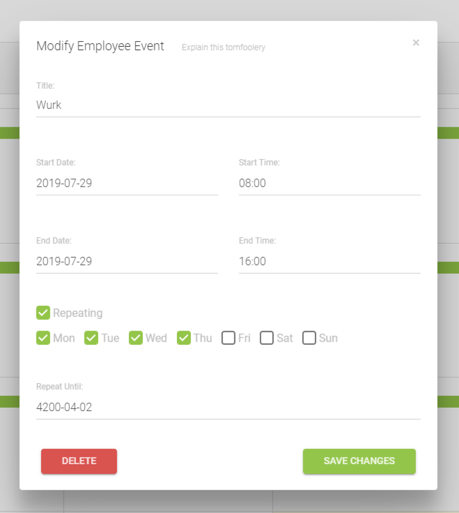
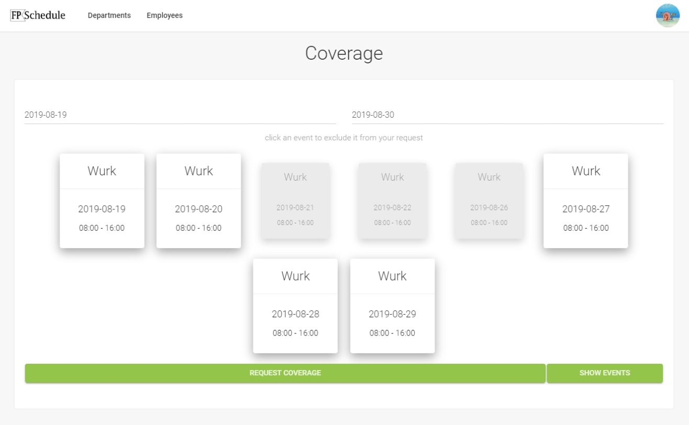

Flight Plan, recently bought by Garmin, builds flight planning and filing software. With over 165,000 active, registered users who file more than 50% of all N#-registered plans, Flight Plan is the largest flight planning company in North America.
When I arrived they were tracking their employee schedules on a paper calendar. I was tasked with solving this issue by creating a web app from the ground up. After a few briefing sessions where the boss laid out their problems as well as some of his ideas the app could have, I was off. I lovingly named my internal product FPSchedule.
The main screen of FPSchedule shows a day view of everybody in the company, so when you wake up in the morning and wonder who you’re working with that day it’s a quick visit away. A more detailed list view of today’s shifts is in the top left and clicking a name brings you to that employee’s page.
Here you can see a complete overview of when your coworker is on, or if this is your page, you can edit your profile or schedule. An admin status was later added so management can change all schedules. Clicking add event or an already existing event brings up the event dialog.
The biggest challenge I faced was creating a repeating event feature. I had to ask myself, how is this modelled in the database? We can’t extend all instances of the repeated event until its stop date, because then we could have thousands of individual events filling up and slowing down our system. I had to figure out a custom schema to model a “repeating” event type, so a single database entry could represent a highly customizable repeating event entry.
A problem I enjoyed solving was a coverage feature. An employee inputs a start and end time and the system pulls up all events the employee has scheduled in that time frame. From here they can exclude shifts and then request coverage. All employees in their department as well as admins are notified via an in-app notification as well as an email of this request. If they accept covering the shifts, the events are transferred from the requesting employees schedule to the new employee’s schedule.